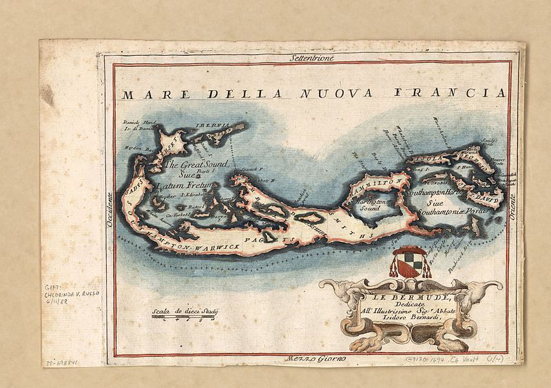
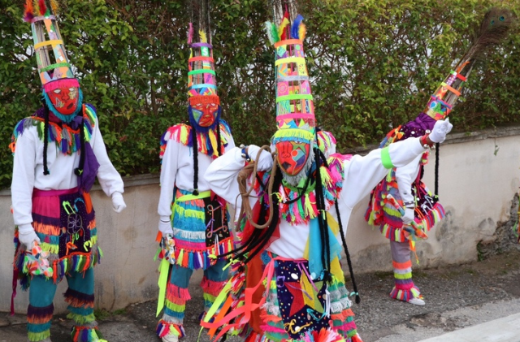

HISTORY & CULTURE

DISCOVERY & SETTLEMENT
Bermuda first appeared on a map in the early 1500s, but its inhabitation started about 100 years later, following a shipwreck just offshore. The crew of the Sea Venture decided to stay put – was it out of necessity, or just because they’d fallen in love with our island? Since its eventful beginnings, Bermuda has been part of some of the world’s most important, impactful events, attracting people from all over the world to its shores and growing to a population of more than 60,000 today.
As you take a walk through Bermuda’s history, you’ll cover a lot of territory: slavery and emancipation, the arrival of the British Royal Navy, the mystique of the Bermuda Triangle during the mid-20th century, and so much more – all of which shapes who we are as a country today.

GOMBEYS
Bermuda’s Gombey dancers are a cultural icon reflective of Bermuda’s blend of African, West Indian, Native American and British culture.. They appear in local neighbourhoods on holidays such as Boxing Day and Good Friday, and participate in the Bermuda Day Parade, unmissable in their vibrant costumes and masks, accompanied by energetic drummers.
The Gombeys we see today are a result of talents and traditions passed down through the centuries, with multi-generational troupes connected to a particular parish or family. There are similar related traditions in the Bahamas, St. Kitts and other Caribbean islands; however the Bermudian Gombey was recognized as its own distinct Bermudian art form at a UNESCO Cultural and Conservation Conference in 1970.
The word Gombey is derived from an African word meaning rhythm or drum, and the drummers are an essential part of the performance, often accompanied by a beer-bottle fife. Each troupe has a captain who uses a whistle to instruct the dancers and often carries a whip; chiefs answer to the captain, carry tomahawks and instruct the warriors as they act out a Biblical story or dance solo or in pairs. The vivid costumes feature a tall headdress with peacock feathers, and the decorated capes are unique to each Gombey. If you are lucky enough to hear the drums and witness a Gombey troupe, remember to throw coins as a sign of appreciation.